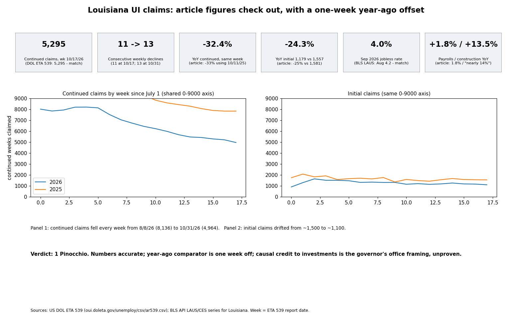

The American Press / Center Square piece (Nov 5, 2026) gets all its headline numbers right against US DOL ETA 539 state data and BLS. Grade: 1 Pinocchio (minor imprecision, no material falsehood).
| Claim | Result |
|---|---|
| 11th consecutive weekly decline | True at 10/17 |
| 5,295 / 5,423 / 7,898 | First two true; 7,898 is a week-offset year-ago (7,837) |
| Initial 1,179 / 1,261 / 1,581 | Same pattern (1,557 true match) |
| Rate 4.0% vs 4.2%; labor force contracted | True (BLS, preliminary) |
| Payrolls +1.8%, ~2.024M | True |
| Construction nearly +14% | +13.5%, rounding generous |
| $150B+ investments, Hyundai/Meta/SpaceX | Consistent with LED figures (announcements) |
| "No accident" quote; savings unquantifiable | Not checkable here |
Confidence: high for numbers (primary sources); low for causal framing.